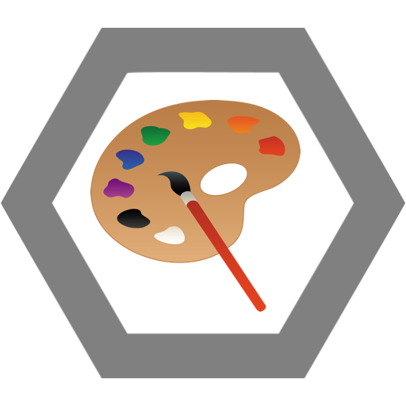

Nezdolná bojovnice za ideály (ať už jakkoliv absurdní), tradice (vymyšlené) a V/vinohrady (o jejich existenci se bohužel nedá pochybovat, ale jejich obrana z Aniččiny strany by se s trochou snahy dala označit za silné elitářství, až snahu o sofokracii). Pro jejich (doslovné) naplnění udělá vše.

Čarovné minové pole
Jeden špatný krok a Anička způsobí stokrát víc škody za sekundu. Druhý špatný krok a zem se promění v lávové jezero.
Vinohrady
Anička je moc hoch na to aby pila pivo jako normální lidi, popíjí totiž starodávný nápoj z vinic Karla Čtvrtého, prej. Takže od Krymský až po Jiřák, jakýkoliv protivník, který si jen odváží loknout onoho „buranského“ moku by mohl být dobře prohlášen za mrtvého. Effect: Death if mezi Jiřák a Krymská and pije beer.
Rádoby hipster/retro hybrid
Baťoh? CD? Digitální foťák? Rudej hadr na bejka je oproti tomu, co tyto věci způsobují Aničce, slabý odvárek. Při spatření těchto nechutných a prázdných produktů bez duše se rozlítí do neuvěřitelné míry. Enrage if moderní shit around, +25%
Kandelábr
Anička překvapí jakékoliv protivníka ne sice úplně nenápadným ale přesto ničivým útokem shora. Stačí neuvěřitelný přehled okolí a nepřekonatelných 183 centimetrů, Anička vidí vše (pokud má brýle). Útok je rychlý a nemilosrdný. V kombinaci s Patrikovou pasivní schopností se jedna o duo, které prostě nepřekvapíte.

Ulti
Nevypočitatelná umělecká agrese. Běda těm, kteří se pak proviní prohřeškem proti jejím uměleckým přesvědčením. Dotyčný je nemilosrdně probodnut štětcem a napuštěn akrylákem, dokud nepřipomíná nasáklou houbu a nedá se s ním utřít tabule na scatches. Co taky s neznalcem. Criple 20 s